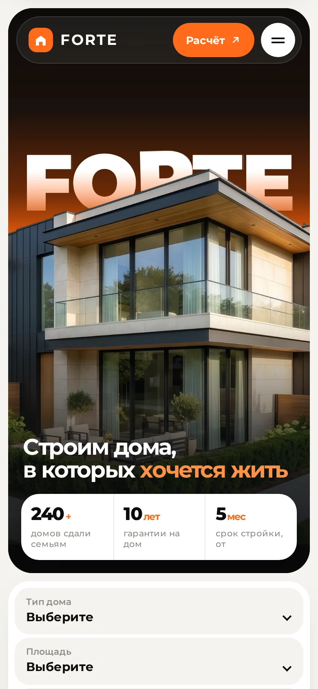

1
Счётчик и шторкаЧёрный экран, огромные цифры от 0 до 100 и оранжевая полоска внизу. На 100 экран уезжает вверх, как шторка.

FORTEСтроим дома, в которых хочется жить0%
2
Дом рисуетсяЛинией рисуется домик из логотипа и заливается оранжевым, под ним по буквам появляется FORTE. Потом круг из центра открывает сайт.
FORTE
3
Этажи складываются в домСверху падают этажи и крыша, получается дом, как будто его строят на глазах. Потом чёрные створки расходятся в стороны.
FORTE
4
Заливка букв и колонкиFORTE поднимается по буквам и заливается оранжевым, как на главном экране. Потом чёрный фон пятью колонками уезжает вверх.
FORTE
5
Оранжевая волнаЭкран снизу заполняется оранжевой волной, в центре логотип и проценты. Когда волна доходит до верха, всё уезжает и открывается сайт.
0%FORTE
6
ЧертёжЭкран расчерчивается сеткой, на ней линиями рисуется дом с оранжевыми размерами. Потом чертёж растворяется, и появляется сайт.
FORTEЧАСТНЫЕ ДОМА ПОД КЛЮЧ